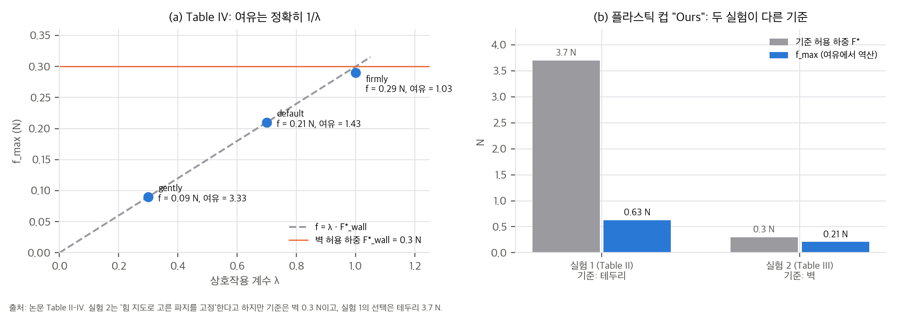
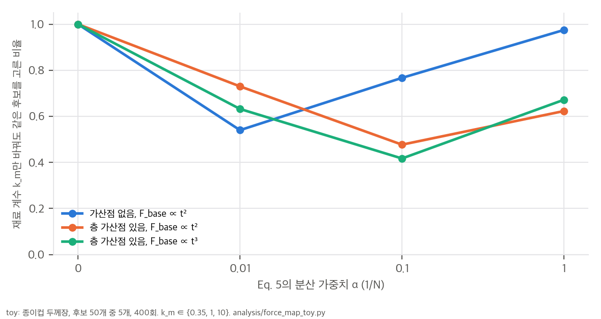
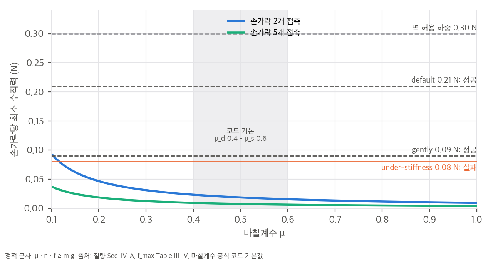

eliizavetas/GraspSense(MIT, 확인 커밋 16dc5fb, 2026-06-01)를 찾았습니다. 인식·장면 준비 단계만 구현되어 있고, 힘 지도는 placeholder입니다(04 §1).한 줄 요약: 물체 표면마다 "변형 없이 견딜 수 있는 최대 횡하중"을 미리 계산한 **힘 지도(force map)**를 만들고, 이 지도로 (1) 기하적으로 비슷한 파지 후보 중 약한 곳을 피하는 후보를 고르고, (2) 손가락마다 임피던스 강성을 그 지점의 허용 하중에 맞춥니다. 언어 명령 → 물체 인식 → SAM 3D 복원 → Isaac Sim까지 잇는 파이프라인이며, 종이컵, 플라스틱 컵, 유리 고블릿 세 물체로 시뮬레이션에서 보였습니다.
논문이 내세우는 기여는 네 가지입니다(Sec. I).
(A) 명령 "Take a paper cup carefully" → Qwen → C = (O, a, λ)
O ∈ {paper cup, plastic cup, glass goblet}, a ∈ {pick up, pick and place, hand over}, λ ∈ [0, 1] (gently/default/firmly)
(B) RGB → YOLO-World(검출, 내부 점) → SAM(마스크) → SAM 3D(메쉬) → .glb → .usd
USD: 실제 크기로 정규화, SDF 충돌체, O로 찾은 재질값(ρ, μs, μd, e_r)
(C) 힘 지도: PCA 주축 → L 높이층 × A 각도 구간 → 2단계 광선 투사로 벽 두께 τ(l, a)
→ 테두리 보정 → F_base(T) + 층 가산점 → 재료 계수 k_m → F_clamp로 자름 → 꼭짓점에 투영(USD primvar)
(D) DexGraspNet K = 50 후보 → Isaac Gym 안정성 검사 → TaskGrasp 기능 필터 → 상위 M = 5
→ 힘 지도 점수 S_F = min_k F_{i,k} − α Var_k(F_{i,k}) 최대 후보 선택
(E) 손 펴고 뒤로 물린 자세 → diffusion 모션 → 접촉 후 손가락별 임피던스 제어(강성 ∝ 허용 하중 × λ)
02 §2).F(l, a) = min( (F_base(l, a) + Σ_{s∈S} b_s(l)) · k_m , F_clamp )
FEM 전처리와 비슷한 이산화를 쓰지만 PDE는 풀지 않는 "physics-informed geometric approximation"이라고 설명합니다.
04 D9).03 §4).논문에 값이 없는 것: F_base의 꼴, k_m, F_clamp, 가산점 폭, L, A, α, τ_F, F_max, U(g)(기준선 효용), γ_n, δ_n,max, ζ_n, K_base, diffusion 계획기의 정체, Qwen 판(본문과 그림이 다름).
Isaac Sim, Shadow Hand, 물체당 DexGraspNet 후보 K = 50개입니다. 물체는 종이컵(7.6 g), 플라스틱 컵(1.9 g), 유리 고블릿(155 g)입니다. 기능 필터를 거친 상위 M = 5개 후보를 두 방식으로 고릅니다. 기준선은 효용 U(g)가 가장 높은 후보(힘 지도 미사용)이고, 제안 방법은 S_F가 가장 높은 후보입니다. 접촉 영역, F*_min, 여유 F*_min/f_max, 위반 손가락 수, 성공(3초 유지)을 보고한다고 적었지만, Table II에는 성공 열이 없습니다.
| 물체 | 영역 1 [N] | 영역 2 [N] | 바닥 [N] |
|---|---|---|---|
| 종이컵 | 테두리 41.2 | 벽 4.8 | 88.8 |
| 플라스틱 컵 | 테두리 3.7 | 벽 0.3 | 8.0 |
| 유리 고블릿 | 볼 69 | 줄기 565 | 989 |
| 물체 | 방법 | 영역 | F*_min [N] | 여유 | 위반 |
|---|---|---|---|---|---|
| 종이컵 | 기준선 | 벽 | 4.8 | 1.4 | 1/5 |
| 제안 | 테두리 | 41.2 | 7.8 | 0/5 | |
| 플라스틱 컵 | 기준선 | 벽 | 0.3 | 1.2 | 2/5 |
| 제안 | 테두리 | 3.7 | 5.9 | 0/5 | |
| 고블릿 | 기준선 | 볼 | 69.0 | 2.1 | 1/5 |
| 제안 | 줄기 | 565 | 12.4 | 0/5 |
해석 (재계산은 04 §3, analysis/table_check.py):
| 조건 | f_max [N] | 여유 | 위반 | 성공 |
|---|---|---|---|---|
| Under-stiffness (0.3 K_base) | 0.08 | – | 0/5 | ✗ |
| Over-stiffness (2.0 K_base) | 0.74 | 0.41 | 4/5 | ✗ |
| 제안 (λ = 0.7) | 0.21 | 1.43 | 0/5 | ✓ |
| 모드 | λ | f_max [N] | 여유 | 성공 |
|---|---|---|---|---|
| Gently | 0.3 | 0.09 | 3.33 | ✓ |
| Default | 0.7 | 0.21 | 1.43 | ✓ |
| Firmly | 1.0 | 0.29 | 1.03 | ✓ |
해석:
03 §3).RigidBodyPropertiesCfg)와 SDF 충돌체로 만듭니다. 위반은 실제 변형이 아니라 같은 힘 지도와의 비교로 판정됩니다.닫힌 루프 촉각 피드백이 있는 실제 로봇손에 배포하는 것, 복잡한 물체 형상으로 일반화하는 것, 처음부터 기계적으로 유리한 영역 쪽으로 샘플링하는 목표 인지 파지 생성을 향후 과제로 들었습니다. 한계 절은 따로 없습니다.
04 D5). "물체를 망가뜨리지 않는다"는 주장은 시뮬레이션 안에서도 확인되지 않았습니다.03 §2). 재료 모델은 선택이 아니라 강성 설정과 λ 필터에만 영향을 줍니다.03 §2).04 §1).03 §4). 기준선 행의 모순(5번)도 이런 불일치로 생겼을 수 있습니다(가설).재계산 스크립트는 analysis/table_check.py(표 정합성, 결과 table_check_results.json)와 analysis/force_map_toy.py(재순위화와 조회 방식, 결과 force_map_toy_results.json)입니다. 공식 코드에 힘 지도와 재순위화가 없어서, toy는 논문 Sec. III-C·D의 설명대로 직접 만들었습니다. 논문에 없는 값(F_base의 꼴, 가산점 폭, α)은 가정했습니다. 모두 CPU에서 2초 안에 끝납니다.
Table II의 여유는 F*_min / f_max이고, 위반은 f_k > F*_k인 손가락 수입니다. F*_min = min_k F*_k이므로 다음이 성립합니다.
여유 > 1 ⇔ f_max < F*_min ⇒ 모든 k에서 f_k ≤ f_max < F*_min ≤ F*_k ⇒ 위반 0
기준선 세 행은 여유가 1.4, 1.2, 2.1인데 위반이 1/5, 2/5, 1/5입니다. 정의대로라면 불가능한 조합입니다. 가능한 설명은 실행 중 접촉점이 계획한 손끝 위치와 달라서 F*_k가 계획 단계의 F*_min보다 작았던 경우입니다. 실행 단계는 최근접 꼭짓점으로 조회하므로, 이런 차이가 생길 수 있습니다(§4). 논문에는 설명이 없습니다.
실험 2의 강성은 K_k = K_base · F*_k / F_max · λ입니다. 정상 상태 오프셋을 Δx라 하면 f_k ≈ K_k Δx = λ · F*_k · (K_base Δx / F_max)입니다. 괄호 항이 1이면 f_k = λ F*_k이고, 여유는 F*/f = 1/λ가 됩니다. 보고된 값이 정확히 그렇습니다.
| 모드 | λ | f_max / (λ · 0.3 N) | 여유 × λ |
|---|---|---|---|
| gently | 0.3 | 1.000 | 0.999 |
| default | 0.7 | 1.000 | 1.001 |
| firmly | 1.0 | 0.967 | 1.03 |

해석: Table IV는 "언어 명령이 끝까지 전달되었다"는 증거로 제시되었지만, 실제로는 제어기가 f = λ F*를 따라갔다는 확인입니다. 안전 여유를 따로 두지 않았으므로 λ = 1("firmly")은 허용 한계의 97%까지 갑니다. 센서 잡음이나 지도 오차가 3%만 있어도 위반입니다.
그림 (b)처럼 실험 1의 플라스틱 컵 제안 방법은 테두리 기준(3.7 N)에 f_max 0.63 N이고, 실험 2는 벽 기준(0.3 N)에 f_max 0.21 N입니다. 실험 2가 "힘 지도로 고른 파지를 고정했다"면 기준은 테두리여야 하는데, Fig. 4의 손끝은 벽에 있습니다. 실험 2의 결론(under/over-stiffness 대비 우위)은 벽 파지라는 가장 불리한 설정에서 나온 것으로, 실험 1이 고른 파지에 대한 검증이 아닙니다.
상한에 걸리지 않는다고 하면(F < F_clamp) F_{i,k} = k_m · (F_base(t_{i,k}) + b(l_{i,k}))입니다. b(l)은 층 가산점이고, F_base는 두께에 대해 단조 증가합니다.
종이컵 같은 두께장(벽 0.35 mm, 테두리 1.0 mm, 바닥 1.5 mm, 잡음 4%)을 만들었습니다. 그 위에 후보 50개(손가락 5개)를 뽑고, 무작위 5개 중 하나를 고르는 일을 400번 반복했습니다. k_m ∈ {0.35, 1, 10}입니다.
| 설정 | k_m만 바꿨을 때 선택이 같은 비율: α = 0 / 0.01 / 0.1 / 1 | 최소 두께 규칙과 일치 (α = 0) |
|---|---|---|
| 가산점 없음, F_base ∝ t² | 1.00 / 0.54 / 0.77 / 0.98 | 1.00 |
| 가산점 있음, F_base ∝ t² | 1.00 / 0.73 / 0.48 / 0.62 | 0.48 |
| 가산점 있음, F_base ∝ t³ | 1.00 / 0.63 / 0.42 / 0.67 | 0.46 |

해석:
정적 근사로, 손가락 n개가 같은 수직력 f로 누를 때 μ · n · f ≥ m g이면 물체를 들 수 있습니다.
| 물체 | 무게 | 손가락당 최소 f (μ = 0.3, 2개) | (μ = 0.6, 5개) | 보고된 f_max (실험 1, 제안) | f_max / 무게 |
|---|---|---|---|---|---|
| 플라스틱 컵 1.9 g | 0.019 N | 0.031 N | 0.006 N | 0.63 N | 34 |
| 종이컵 7.6 g | 0.075 N | 0.124 N | 0.025 N | 5.28 N | 71 |
| 고블릿 155 g | 1.52 N | 2.53 N | 0.51 N | 45.6 N | 30 |

해석:
계획(Eq. 4)은 삼각형 꼭짓점 값을 무게중심 좌표로 보간하고, 실행(Sec. III-E)은 최근접 꼭짓점 값을 씁니다. 종이컵의 벽(4.8 N) → 테두리(41.2 N) 전이가 3 mm 안에서 일어난다고 하고, 전이 구간 ±5 mm의 접촉점에서 두 값을 비교했습니다(1D, 꼭짓점 간격 h).
| 꼭짓점 간격 | 상대 차이 중앙값 | 상대 차이 95% 분위 | 실행값 > 1.5 × 계획값인 비율 |
|---|---|---|---|
| 0.5 mm | 0.00 | 0.15 | 0.0% |
| 1 mm | 0.00 | 0.33 | 0.0% |
| 2 mm | 0.00 | 0.68 | 0.7% |
| 5 mm | 0.09 | 2.43 | 5.6% |
| 10 mm | 0.35 | 3.39 | 12.1% |
해석: 꼭짓점 간격이 전이 폭보다 크면, 같은 접촉점을 계획과 실행이 몇 배 다른 허용 하중으로 봅니다. SAM 3D 메쉬의 해상도는 보고되지 않았습니다. 이 차이가 1.1절 모순(여유 > 1인데 위반)의 원인일 수 있습니다(가설). 두 단계에 같은 조회 방식을 써야 합니다.
얇은 판에 점하중이 걸릴 때 최대 굽힘 응력은 대략 F / t²에 비례합니다. 그래서 항복(파손) 직전 허용 하중은 F ≈ C · σ · t²(C ~ 1) 꼴입니다. 재료 강도 σ를 사전 지식의 대략값으로 두고 Table I이 어떤 두께에 해당하는지 역산했습니다. σ는 종이·판지 30–50 MPa, 얇은 플라스틱 25–35 MPa, 유리(설계 인장) 30–50 MPa로 두었고, 확인이 필요한 값입니다.
| 물체 | 영역 | 허용 하중 | 함의하는 두께 (C = 1) |
|---|---|---|---|
| 종이컵 | 벽 / 테두리 / 바닥 | 4.8 / 41.2 / 88.8 N | 0.31–0.40 / 0.91–1.17 / 1.33–1.72 mm |
| 플라스틱 컵 | 벽 / 테두리 / 바닥 | 0.3 / 3.7 / 8.0 N | 0.09–0.11 / 0.33–0.38 / 0.48–0.57 mm |
| 고블릿 | 볼 / 줄기 / 바닥 | 69 / 565 / 989 N | 1.17–1.52 / 3.4–4.3 / 4.5–5.7 mm |
해석:
eliizavetas/GraspSense @ 16dc5fb (2026-06-01, MIT). 저장소는 2026-05-19에 만들어졌습니다. v2(2026-04-13)보다 뒤이고, 논문과 arXiv 페이지에는 링크가 없습니다. 소유자 이름(Elizaveta)과 README가 가리키는 연구실 작업 환경으로 보아 1저자의 저장소로 추정합니다. 공식 공개본이라는 명시는 없습니다.PKU-EPIC/DexGraspNet @ bd1b13d의 grasp_generation/utils/initializations.py, energy.py를 읽었습니다.README가 스스로 밝힌 상태: "perception and scene-preparation" 골격은 동작하고, "real physically grounded force-map construction", "USD primvar export", "grasp generation, grasp ranking, motion planning, and impedance-based grip execution"은 진행 중입니다.
| 논문 | 구현 위치 | 상태 |
|---|---|---|
| (A) Qwen 과제 이해 → (O, a, λ) | modules/vlm/vlm_module.py, prompts.py |
⚠️ Qwen2.5-VL-3B-Instruct를 별도 프로세스로 실행하고, 실패하면 정규식 파서로 대체합니다. λ의 수치 변환은 없고 모드 문자열만 있습니다(D3) |
| (B) YOLO-World 검출 | modules/detection/yolo_detector.py (ultralytics yolov8s-worldv2) |
✅ |
| (B) SAM 분할 | modules/segmentation/sam_segmentor.py (ViT-H) |
✅ |
| (B) SAM 3D 복원 | modules/segmentation/sam3d_reconstructor.py → facebookresearch/sam-3d-objects를 별도 conda env에서 실행 |
✅ 논문 [17] 인용과는 다른 저장소입니다(D6) |
| (B) GLB → USD, SDF 충돌체 | scripts/convert_mesh_to_usd_isaaclab.py (collision_approximation="sdf") |
✅ |
| (B) 실제 크기 정규화, O로 찾는 재질값, 자동 질량 | 같은 파일 | ❌ 크기 정규화 코드가 없고, 질량 0.5 kg·마찰 0.6/0.4·반발 0이 고정 기본값입니다(D4) |
| (C) 힘 지도 (PCA, 광선 두께, 테두리 보정, 가산점, primvar) | modules/force_map/force_map_builder.py |
❌ placeholder. 메쉬를 읽지 않습니다(D1) |
| (D) DexGraspNet 후보, TaskGrasp 필터, 재순위화 Eq. 4–6 | – | ❌ 없음 (README "in progress") |
| (E) diffusion 접근, 임피던스 Eq. 8–11 | – | ❌ 없음 |
| # | 내용 | 영향 |
|---|---|---|
| D1 | 힘 지도는 메쉬와 무관한 placeholder입니다. 20층 × 36구간 격자에 고정 Gaussian 가산점(테두리 +0.6, 바닥 +0.4)과 각도 방향 10% 사인 변동을 넣고, 재료 계수(paper 0.35, plastic 0.55, glass 0.85)를 곱한 뒤 10 N에서 자릅니다. mesh_path는 메타데이터에 기록만 합니다. 클래스 주석에 PCA, 광선 투사 두께, 테두리 보정, 꼭짓점 투영, primvar 저장이 모두 TODO로 적혀 있습니다. |
논문의 핵심 기여 1이 공개 코드에 없습니다. placeholder의 재료 순서(종이 < 플라스틱)는 Table I(종이컵 ≫ 플라스틱 컵)과 반대이고, 상한 10 N은 Table I의 989 N과 맞지 않습니다. |
| D2 | 기여 2–3(재순위화, 손가락별 임피던스)과 DexGraspNet·TaskGrasp 연결이 없습니다. | Table II–IV를 코드로 재현할 수 없습니다. |
| D3 | 과제 이해 모델이 **VLM(Qwen2.5-VL-3B)**입니다. 논문 본문은 Qwen[14](2023 technical report, LLM)를 인용하고, Fig. 2는 "LLM-model Qwen 2.5"라고 적었습니다. 행동 유형도 다릅니다. 코드는 {take, pick_up, lift, find, hold, unknown}이고, 논문은 {pick up, pick and place, hand over}입니다. λ ∈ [0, 1]로 바꾸는 코드는 없습니다. Qwen이 실패하면 정규식이 "gently/carefully/fragile"을 찾아 모드를 정합니다. | 논문 실험의 λ = 0.3/0.7/1.0을 이 코드로 만들 수 없습니다. 세 물체 이름을 찾는 조회표(_MATERIAL_OBJECTS)가 재질을 정합니다. |
| D4 | 논문은 "메쉬를 실제 크기로 정규화하고, O로 찾은 조회표에서 ρ, μs, μd, e_r을 붙이고, 질량을 자동 계산"한다고 적었습니다. 코드는 크기 정규화가 없고, 질량 0.5 kg, 정지마찰 0.6, 동마찰 0.4, 반발 0이 모든 물체에 같은 기본값입니다. | 1.9 g 플라스틱 컵이라면 질량이 263배 큽니다. 논문 실험에 쓴 설정이 따로 있었는지는 알 수 없습니다. |
| D5 | 물체는 강체(RigidBodyPropertiesCfg)와 SDF 메쉬 충돌체입니다. |
벽의 변형이나 파손은 시뮬레이션할 수 없습니다. 논문의 "visible wall deformation"(Sec. IV-B)이 이 설정에서는 나올 수 없고, 논문에도 변형체 설정 설명이 없습니다. |
| D6 | SAM 3D는 facebookresearch/sam-3d-objects(arXiv:2511.16624)입니다. 논문 [17]은 arXiv:2306.03908(3D 장면 분할, Pointcept/SegmentAnything3D)입니다. v1 Fig. 2에는 Meta 로고가 있었고 v2에서 지워졌습니다. |
인용 오류입니다. 재현할 때 [17]을 따라가면 다른 모델을 받게 됩니다. |
| D7 | 시뮬레이터가 셋입니다. 실험은 Isaac Sim, 후보 검증은 Isaac Gym(DexGraspNet 방식), 공개 코드의 USD 변환은 Isaac Lab(isaaclab.sh)입니다. |
환경을 맞추는 비용이 큽니다. 접촉 모델이 시뮬레이터마다 달라 후보 검증 결과가 실험 환경에서 그대로 성립하는지 확인이 필요합니다. |
| D8 | 논문 이후에 추가된 기능: 실시간 카메라 모드(scripts/run_live_camera_pipeline.py), Isaac Sim 장면 뷰어. SAM 3D와 Isaac Lab의 CUDA·Omniverse 충돌을 피하려고 단계를 둘로 나눴습니다. |
파이프라인 앞단의 실용 정보입니다. |
| D9 | DexGraspNet 대조: Shadow Hand 자유도는 22입니다(joint_angles_mu 길이 22, hand_pose = 3 + 6 + n_dofs). 논문 Eq. 1은 θ ∈ R²⁴입니다. 에너지는 E_fc + w_dis·E_dis + w_pen·E_pen + w_spen·E_spen + w_joints·E_joints(기본 100, 100, 10, 1)로, 논문 Eq. 2에는 접촉 거리항 E_dis와 가중치가 빠져 있습니다. |
손목 관절 2개를 넣었는지 등은 알 수 없습니다. Eq. 2만 보고 구현하면 DexGraspNet과 다른 최적화가 됩니다. |
| # | 주장 (출처) | 재계산 | 판정 |
|---|---|---|---|
| C1 | F*_min 8.6×, 12.3×, 8.2× 향상 (Sec. IV-A) | 41.2/4.8 = 8.58, 3.7/0.3 = 12.33, 565/69 = 8.19 | ✅ Table I 영역 값의 비율 |
| C2 | Table II 여유와 위반 | 기준선 세 행이 여유 > 1인데 위반 1–2개. 역산 f_max: 기준선 3.43 / 0.25 / 32.9 N, 제안 5.28 / 0.63 / 45.6 N | ⚠️ 정의상 불가능한 조합. 제안 방법이 더 세게 잡음 |
| C3 | over-stiffness가 허용 하중의 2.5배 초과 (Sec. IV-B) | 0.74 / 0.3 = 2.47. 여유 0.3/0.74 = 0.41, 0.3/0.21 = 1.43 | ✅ |
| C4 | Table IV: 모드별 여유 | f_max = λ × 0.3 N이 세 자리까지 일치하고, 여유 × λ = 0.999, 1.001, 1.03 | ⚠️ 제어 법칙의 동어반복 (03 §1.2) |
| C5 | 실험 2는 "힘 지도로 고른 파지"를 씀 | 실험 1의 선택은 테두리 3.7 N(f_max 0.63 N), 실험 2의 기준은 벽 0.3 N(f_max 0.21 N). Fig. 4의 손끝도 벽에 있음 | ⚠️ 서로 다른 파지 |
| C6 | under-stiffness는 "마찰 부족으로 미끄러짐" | 1.9 g 컵, μ = 0.3, 손가락 둘이면 손가락당 0.031 N으로 충분. 0.08 N은 그 2.6배 | ⚠️ 정역학으로 설명 안 됨 |
| C7 | under-stiffness 실패 vs gently 성공 | 0.08 N vs 0.09 N(12.5% 차이). F*_k = F_max이면 두 조건은 같은 강성(0.3 K_base) | ⚠️ 경계가 좁고 F_max 정의 없음 |
| C8 | 시행 수 | 실험 1은 rollout 6회(물체 3 × 방법 2), 실험 2는 5회. x/5는 손가락 수 | 통계 없음 |
| C9 | Shadow Hand 관절 24 (Eq. 1) | DexGraspNet 코드는 22 | ⚠️ D9 |
| T1 | 재순위화가 재료 정보를 쓴다 | α = 0이면 k_m과 무관하게 같은 후보를 고름(400회 중 100%) | 03 §2 |
| T2 | 계획·실행의 허용 하중이 같다 | 꼭짓점 간격 5 mm에서 테두리 전이 구간 접촉점의 5.6%가 실행 단계에서 1.5배 넘게 관대하게 보임 | 03 §4 |
| T3 | Table I 값의 크기 | σ t²로 보면 벽 두께 종이 0.31–0.40 mm, 플라스틱 0.09–0.11 mm, 유리 볼 1.2–1.5 mm에 해당 | 자릿수는 그럴듯함 (03 §5) |
| 항목 | 요구 사항 | 비고 |
|---|---|---|
| 돌아가는 범위 | 명령 + RGB → Qwen → YOLO-World → SAM → SAM 3D → USD 장면 | 힘 지도는 placeholder이고, 파지 선택과 제어는 없습니다 |
| GPU | NVIDIA CUDA GPU | SAM 3D가 Kaolin, PyTorch3D 같은 CUDA 패키지를 쓰고, Isaac Lab도 CUDA가 필요합니다 |
| 소프트웨어 | Linux, conda env 2개(main, sam3d), Isaac Sim + Isaac Lab | README가 SAM 3D와 Isaac Lab을 같은 프로세스에 두면 CUDA·Omniverse 충돌이 난다고 경고합니다 |
| 가중치 | SAM 3D 체크포인트(HF gated), SAM ViT-H, YOLO-World v2, Qwen2.5-VL-3B | 자동 다운로드가 아직 없습니다 |
| 라이선스 | 코드 MIT, SAM 3D(SAM License), YOLO-World GPL-3.0 / ultralytics AGPL-3.0 | 상업적 사용에는 조건 확인이 필요합니다 |
판단: 공개 코드로 논문 결과(Table I–IV)를 재현할 수는 없습니다. 핵심 기여 세 개가 구현되지 않았고, 논문에도 필요한 값이 대부분 없습니다. 공개 코드로 할 수 있는 것은 앞단(언어 → 3D 메쉬 → Isaac 장면)까지이고, 그것도 NVIDIA GPU가 있는 Linux 머신이 필요합니다.
| 단계 | 가능 여부 | 근거 |
|---|---|---|
| 표 재계산, 재순위화·조회 toy | ✅ 완료 | numpy, 2초 |
| 힘 지도 알고리즘을 실제 메쉬에 구현 (PCA, 광선 두께, 테두리 보정, 꼭짓점 투영) | ✅ 가능 | 광선-삼각형 교차를 numpy로 직접 짜면 설치가 필요 없습니다. 컵 메쉬는 절차적으로 만들 수 있습니다 |
| Qwen2.5-VL-3B 과제 이해 | 조건부 | PyTorch MPS로 돌 수 있어 보이지만, torch·transformers 설치와 수 GB의 가중치(3B 파라미터, bf16 기준 약 7 GB로 추정)가 필요합니다. 확인하지 않았습니다 |
| SAM, YOLO-World | 조건부 | CPU·MPS로 추론은 될 것으로 보이며, 설치가 필요합니다 |
| SAM 3D 복원 | ❌ | CUDA 전용 의존성(Kaolin, PyTorch3D CUDA 빌드) |
| DexGraspNet 후보 생성, Isaac Sim/Lab/Gym 실험 | ❌ | CUDA 필요, Isaac은 macOS를 지원하지 않습니다 |
| 구성 요소 | 난이도 | 메모 |
|---|---|---|
| 재순위화 (Eq. 4–6) | 낮음 | 수십 줄입니다. 분산 항은 변동계수로 바꾸고, 계획과 실행의 조회 방식을 통일해야 합니다(03 §2, §4) |
| 힘 지도 (두께 → 허용 하중) | 중간 | 수백 줄입니다. F_base의 꼴과 가산점은 직접 정해야 합니다. σ t²에서 시작할 수 있습니다(03 §5) |
| 손가락별 임피던스 | 낮음–중간 | 시뮬레이터의 관절 PD 이득을 손가락별로 바꾸면 됩니다 |
| 힘 지도의 검증 | 높음 | 이 연구에서 빠진 부분입니다. 변형체 시뮬레이션(FEM)이나 실제 컵의 눌림·파손 하중 측정이 있어야 의미 있는 재현이 됩니다 |
요약: 알고리즘 자체는 짧고 단순해서 다시 구현하기 쉽습니다. 하지만 논문 결과를 재현하는 것은 불가능하고(코드와 값 부재), 재현해도 같은 힘 지도로 판정하는 한 순환 평가입니다. 가치 있는 작업은 힘 지도를 독립된 물리 기준(FEM, 실측)과 비교하는 것입니다.
번호 [n]은 논문의 참고문헌 번호이고, arXiv ID는 논문 참고문헌에 적힌 값입니다. SAM 3D 인용(§2)과 GitHub 표(§5)는 직접 확인했습니다. 나머지 논문은 따로 열어 검증하지 않았습니다.
[파지 합성] 해석적 force closure ─→ DexGraspNet [2] (Shadow Hand, 미분 가능 force closure 에너지, 대규모 시뮬레이션 데이터)
└→ UniDexGrasp [4], AnyDexGrasp [5] arXiv:2502.16420 (범용·다른 손)
[후보 순위] GRaCE [6] arXiv:2309.08887 (안정성·도달성·기능의 다기준 순위, 계층 논리 + 순위 보존 효용)
[과제 지향] TaskGrasp [18] arXiv:2011.06431 (과제별 파지 데이터 + GCNGrasp)
[언어] Code as Policies [10], LAN-grasp [11], Grasp as You Say [12], VL 과제 지향 파지 [13]
[힘·순응] 임피던스 제어 Hogan [8], 힘 피드백 기능 파지 [7], FEM 파지 해석 [9]
[인식] SAM [15], YOLO-World [16], SAM 3D (인용은 [17]이지만 다른 논문, §2)
▼ 다기준 순위에 "국소 허용 하중"이라는 기준을 하나 더하고, 같은 값을 제어 강성에도 씀
★ GraspSense: 힘 지도 → 재순위화 → 손가락별 임피던스
차별점 요약: 기존 파지 계획기는 물체 표면을 기계적으로 균일하다고 보고, 순응 제어는 물체 구조와 무관한 일반적인 강성값을 씁니다(Sec. II-E). GraspSense는 둘 사이에 표면별 허용 하중 지도를 끼워 넣었습니다. 새 요소는 학습 모델이 아니라 기하 휴리스틱(벽 두께 → 허용 하중)과 그 값을 쓰는 규칙 두 개입니다.
| 역할 | 출처 | 이 논문에서의 쓰임 |
|---|---|---|
| 과제 이해 | Qwen [14] arXiv:2309.16609 | 명령에서 (O, a, λ) 추출. Fig. 2는 "Qwen 2.5", 공개 코드는 Qwen2.5-VL-3B-Instruct |
| 검출 | YOLO-World [16] (CVPR 2024) | 텍스트 질의로 물체 검출, 내부 점 하나 |
| 분할 | SAM [15] (ICCV 2023) | 점 프롬프트로 마스크 |
| 3D 복원 | 실제로 쓴 것: Meta SAM 3D: 3Dfy Anything in Images arXiv:2511.16624 (facebookresearch/sam-3d-objects). 인용된 것: [17] SAM3D: Segment Anything in 3D Scenes arXiv:2306.03908 |
본문 설명(희소 구조 → 정제, Gaussian/메쉬 디코더), v1 Fig. 2의 Meta 로고, 공개 코드 README가 모두 앞의 것을 가리킵니다. [17]은 SAM으로 3D 장면을 분할하는 다른 연구입니다 |
| 파지 후보 | DexGraspNet [2] (ICRA 2023) | 미분 가능 에너지 최적화, Isaac Gym 검증 |
| 기능 필터 | TaskGrasp [18] (CoRL 2020) | c_F 평가기. 다섯 손가락 파지에 적용한 방법은 설명 없음 |
| 순위 | GRaCE [6] | 기준선 효용 U(g)의 출처로 보이나, 본문에 정의 없음 |
| 순응 제어 | Hogan [8] (1985) | 데카르트 임피던스 Eq. 9 |
| 시뮬레이터 | Isaac Sim (실험), Isaac Gym (후보 검증), Isaac Lab (공개 코드의 USD 변환) | 세 시뮬레이터가 섞여 있음 |
| 논문 | 관계 |
|---|---|
Do as I Do (do_as_i_do/) |
같은 SAM 3D(arXiv:2511.16624)로 물체 메쉬를 복원합니다. Do as I Do 분석에서 본 대로 SAM 3D 메쉬의 스케일은 임의라 별도 정렬이 필요한데, GraspSense 공개 코드에는 실제 크기 정규화가 아직 없습니다(04 D4). |
Contact-Grounded Policy (contact_grounded_policy/) |
둘 다 compliance(임피던스) 제어의 목표를 접촉에 맞게 정합니다. CGP는 상태·촉각 예측에서 학습한 매핑으로 정하고, GraspSense는 미리 계산한 힘 지도로 정합니다. 하나는 닫힌 루프 학습, 하나는 열린 루프 사전 지식입니다. |
FlashDexRetarget (flashdexretarget/) |
같은 Isaac Sim 계열의 dexterous 손 시뮬레이션입니다. FlashDexRetarget의 접촉 보상은 물체가 얼마나 약한지를 고려하지 않으므로, 허용 하중 대비 접촉력 비율을 벌점 항으로 넣을 수 있습니다. |
ZeroDex (zerodex/) |
둘 다 언어/VLM → 물체 인식 → 메쉬 기반 파지라는 zero-shot 파이프라인이고, 물체 메쉬를 어디서 얻는지가 핵심 가정입니다. ZeroDex는 메쉬 출처를 밝히지 않았고, GraspSense는 SAM 3D 단일 이미지 복원으로 얻습니다. |
| 주제 | 관련성 | 근거 수준 |
|---|---|---|
| 변형체 파지 시뮬레이션 (예: DefGraspSim, Isaac Gym FEM으로 파지 중 응력·변형을 측정) | 힘 지도를 검증할 수 있는 바로 그 도구입니다. 같은 컵을 FEM으로 눌러 실제 항복 하중과 비교하면 순환 평가 문제가 풀립니다. | 사전 지식, 서지 확인 필요 |
| Grasp force optimization (최소 내부력으로 물체를 유지하는 고전 문제) | 손가락별 힘 상한(허용 하중)을 제약으로 넣으면 GraspSense의 강성 규칙보다 원리적인 힘 분배가 됩니다. | 사전 지식, 서지 확인 필요 |
| 얇은 판·셸의 점하중 공식 (Roark류 핸드북) | 허용 하중이 대략 σ·t²에 비례한다는 차원 분석의 근거입니다(03 §5). F_base의 함수 꼴을 정할 때 쓸 수 있습니다. |
사전 지식 |
| 촉각 기반 미끄러짐 감지·파지력 조절 | 저자들이 향후 과제로 든 "닫힌 루프 촉각 피드백"의 기존 해법입니다. | 사전 지식 |
gh api 확인)| 저장소 | 무엇인가 | 공식 여부 | 라이선스 | ★ | 마지막 push | 확인 커밋 |
|---|---|---|---|---|---|---|
| eliizavetas/GraspSense | GraspSense 파이프라인의 인식·장면 준비 부분 (Qwen, YOLO-World, SAM, SAM 3D, Isaac Lab USD). 힘 지도는 placeholder | 논문에 링크 없음. 소유자 이름이 1저자와 같고 README가 같은 연구실 장비를 가리킴 → 저자 저장소로 추정 | MIT | 0 | 2026-06-01 | 16dc5fb |
| facebookresearch/sam-3d-objects | SAM 3D Objects (단일 이미지 → 3D) | 구성 요소 공식 | 비표준(SAM License) | 7,602 | 2026-06-02 | f91db41 |
| facebookresearch/segment-anything | SAM | 구성 요소 공식 | Apache-2.0 | 55,073 | 2024-09-18 | dca509f |
| AILab-CVC/YOLO-World | YOLO-World | 구성 요소 공식 | GPL-3.0 | 6,593 | 2025-02-26 | 4f70adb |
| ultralytics/ultralytics | 공개 코드가 실제로 쓰는 YOLO-World 구현(yolov8s-worldv2) |
제3자 패키지 | AGPL-3.0 | 62,935 | 2026-10-28 | bb3e155 |
| PKU-EPIC/DexGraspNet | 파지 후보 생성기 | 구성 요소 공식 | 표기 없음 | 478 | 2025-01-06 | bd1b13d |
| adithyamurali/TaskGrasp | 기능 필터 평가기 | 구성 요소 공식 | MIT | 100 | 2023-03-14 | c0bad3b |
| clear-nus/GRaCE | 다기준 파지 순위 | 관련 연구 공식 | MIT | 4 | 2023-09-16 | 075f555 |
| QwenLM/Qwen2.5-VL (현재 Qwen3-VL로 이동) | 공개 코드의 과제 이해 모델 | 구성 요소 공식 | Apache-2.0 | 20,133 | 2026-01-30 | 9658872 |
| Pointcept/SegmentAnything3D | 논문이 [17]로 잘못 인용한 SAM3D(3D 장면 분할) | 관련 없음 | MIT | 1,392 | 2024-04-21 | 2aaa8c9 |
| PKU-EPIC/UniDexGrasp | 범용 dexterous 파지 [4] | 관련 연구 공식 | 표기 없음 | 276 | 2024-05-25 | 36c9bfc |
| graspnet/AnyDexGrasp | 손 형태 간 파지 [5] | 관련 연구 공식 | 표기 없음 | 227 | 2025-03-22 | c9c4a43 |
참고: 같은 이름의 jussihh/graspsense(2021)는 무관한 프로젝트입니다. 라이선스 조합상 GraspSense를 상업적으로 쓰려면 SAM 3D(SAM License)와 YOLO-World(GPL-3.0)/ultralytics(AGPL-3.0)의 조건을 따로 확인해야 합니다.
한계: 4절의 서지 정보는 내 사전 지식에 근거합니다. 블로그나 git에 올리기 전에 원문을 직접 확인해야 합니다.